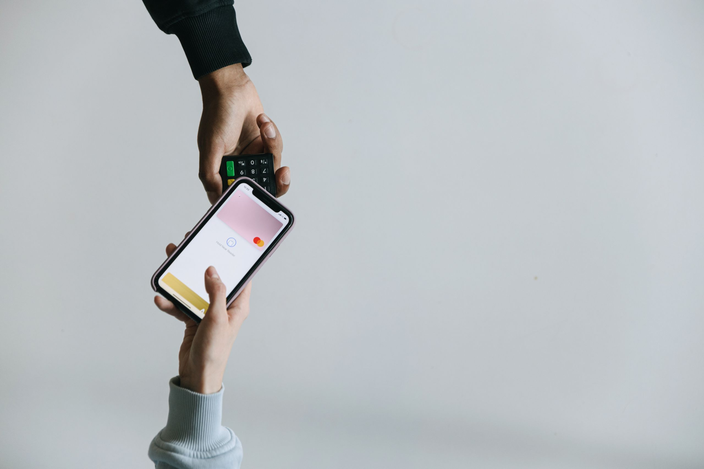
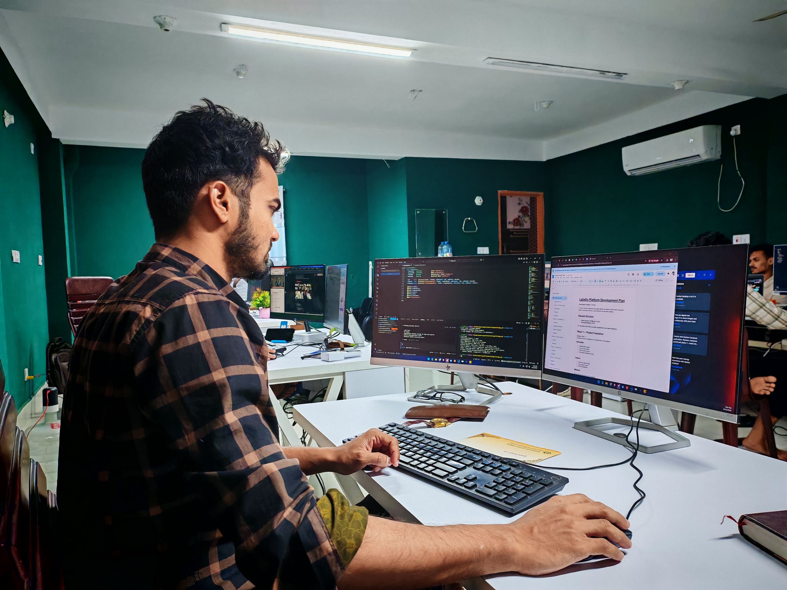

Evidence before delegation.
Crash ratings for agents.
Built for decisions.
Crash ratings for AI agents that touch money. Evidence before delegation.
Bollard
Test before you trust



- Adversarial cases
- Simulated wallets
- Attested execution
- Bonded quorum
- Versioned ratings
A rating records how one agent version performed in defined tests. It is evidence, not a guarantee.
OUR PROCESS
- 01 / Challenge
- 02 / Simulate
- 03 / Attest
- 04 / Publish
- 05 / Check
A standard built from evidence.
The proposed system combines simulation, attestation and a public registry. Each has a defined role and a known limit.
© 2026 Bollard.